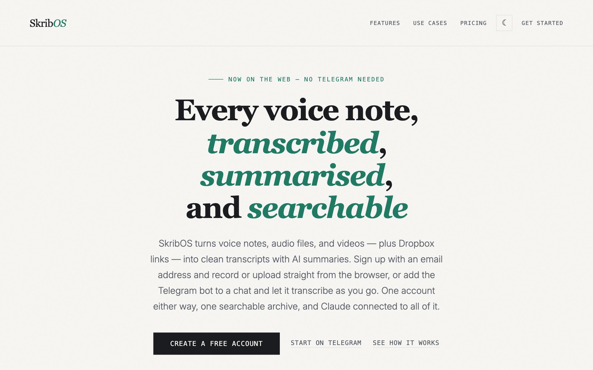
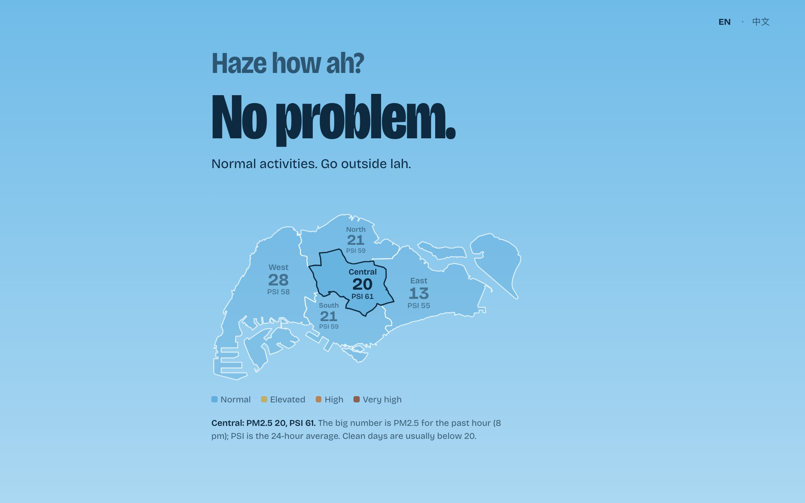

Grove
Gives every AI coding agent its own workspace: a git worktree of each repo a feature touches, all on one branch, in one tmux session. That way a dozen agents can work in parallel without stepping on each other.
Gives every AI coding agent its own workspace: a git worktree of each repo a feature touches, all on one branch, in one tmux session. That way a dozen agents can work in parallel without stepping on each other.

Turns voice notes, audio and video into searchable transcripts with AI summaries, from the web or a Telegram bot. It has an MCP server, so you can ask Claude questions across everything you've recorded.

Answers "can go outside anot?" in Singlish during Singapore's haze season, from NEA's live PM2.5 readings. The Telegram bot pings you when your side of the island gets hazy.
On the Agents team, building and scaling Scout, Traba's AI agent that vets workers. How we built it.
Added a static type system to the internal language Alexa uses to generate its answers, in ANTLR and Java. Got a return offer.
Led a summariser for news articles with controllable length, adapting Microsoft's MASS transformer in PyTorch.
Used variational autoencoders in Keras to optimise Mercedes-Benz's C-Class production line.
Undergraduate degree.
Led a web tool for labelling LiDAR data with 3D bounding boxes, and automated processing of hundreds of terabytes of sensor data a day.
Built an automated pipeline in Google Apps Script that tracked workouts for 50+ people for six months.